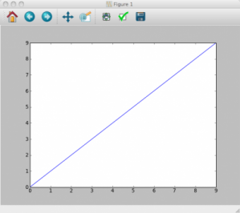
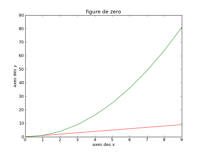
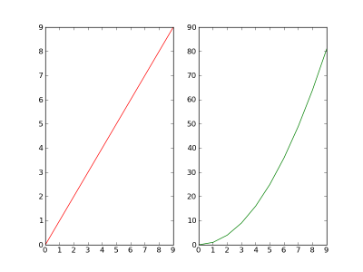
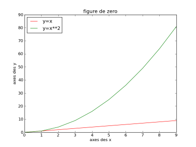
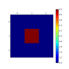
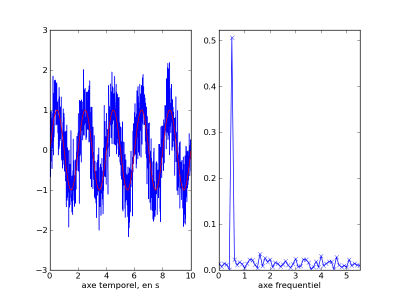
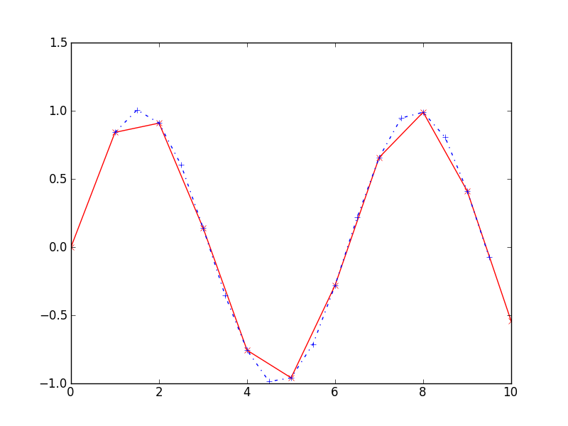

La programmation scientifique avec Python, une alternative gratuite, libre et performante à Matlab, IDL, Scilab, etc. et un complément pratique et utile au C et/ou au Fortran.
La programmation scientifique, c'est quoi ? Pour qui ? Je dois savoir quoi ?
Qu'est-ce que c'est ? C'est l'utilisation de l'informatique et des langages de programmation pour résoudre un problème numérique. Bon on n'est pas forcément plus avancé avec ça. :-° Donc détaillons : La programmation scientifique sert à résoudre des problèmes le plus souvent mathématiques grâce à l'utilisation d'algorithmes numériques optimisés pour les ordinateurs modernes. Ces ordinateurs permettent d'automatiser des tâches répétitives, rébarbatives, ou tout simplement trop longues pour être effectués par un être humain. Tout repose sur l'utilisation de scalaires, de vecteurs et de matrices et de tout l'attirail d'outils mathématiques qui leur est associé (produit, transposé, extremum, etc).
Pour qui ? Toute personne voulant faire faire des calculs par son ordinateur est potentiellement un "programmeur scientifique". ^^
Prérequis ? Pour aborder ce tuto serainement il faudra :
Savoir compter ; ^^
Être au point sur les notions mathématiques de vecteur, matrice, et plus généralement sur l'algèbre. Pas besoin d'être agrégé en mathématiques mais il vous faudra au moins être relativement à l'aise avec ces notions ;
Être au point sur le language Python en lui même. Pour ce faire je ne peux que conseiller l'excellent tuto Python du sdz. :-°
Compter avec Python ?
Pourquoi faire du calcul scientifique avec Python me demanderez vous, c'est interprété (donc moins rapide), c'est gratuit (donc louche ;) ), et de toutes façons rien ne remplace le C et/ou le Fortran :-° ...
Les modules scientifiques que je vais détailler après sont basés sur certaines grosses bibliothèques scientifiques en C, C++ ou Fortran qui ont fait leurs preuves (Blas, Lapack, Atlas) ;
ça s'interface très facilement avec des codes Fortran et C : on peut donc réutiliser ses anciens codes sans souci ;
C'est interactif donc particulièrement adapté à de multiples petits calculs, plots, etc. dans l'interpréteur (les utilisateurs de Matlab et IDL savent à quel point c'est utile ;) ).
Ouverture des hostilités
Attaquons donc le cœur du sujet : De quoi avons-nous, scientifiques, besoin pour travailler/programmer :
des tableaux de nombres (vecteurs, matrices);
des opérations de traitement de ces tableaux de nombres (addition, multiplication, puissance, tri, minimum, etc. ;
des outils de visualisation (tracé de graphes 2D, 3D, surface, contour, etc. ) ;
des routines de traitements (transformées de Fourier, interpolation, résolution de système linéaire, etc. ) ;
plein d'autres petites choses créées à la main...
Nous allons étudier ici essentiellement les outils mis à disposition par le Projet SciPy qui fournit tout ce dont on aura besoin pour commencer.
De manière informatique : une collection indexable et contigüe d'éléments de même type.
Pour disposer d'un tel objet nous allons utiliser le paquet Numpy (url) qui va mettre à notre disposition l'objet ndarray[], un objet type dérivé de "list" ne contenant QUE des nombres du même type (entier, flottant, flottant double précision, logique) , comportant un indice (sa position dans le tableau) , un certain nombre de méthodes utiles (minimum, maximum, tri, etc. ) et pour finir, cet objet est à la base d'autres paquets fondamentaux pour toutes applications scientifiques, mais nous y reviendrons plus tard.
Pour avoir cet objet disposition il faut installer le paquet Numpy, 3 cas :
Linux ou Mac OS/X : via votre gestionnaire de paquets préféré (apt-get, yum, pacman, etc) ou directement via le gestionnaire de paquet python pip : Exemple sous Ubuntu :
Windows : via la distribution Python(x,y) (qui a le bon goût d'être en français), ou via les sources.
La dernière option qui devrait marcher dans tout les cas est de télécharger l'archive sur le site officiel, se mettre dans une console avec des droits administrateur, aller dans le dossier et entrer :
python setup.py install
Ensuite pour l'utiliser dans votre script (ou en console interactive) :
A partir de là les outils numpy sont disponibles via np.truc_numpy().
Création et remplissage de Tableau
Création simple de tableau
Créons donc un tableau ndarray[], un tableau d'entiers, de dimension 2x3, par exemple une matrice 2x3, plein de "0" :
tableau_de_zero = np.zeros((2, 3), dtype='i')
Mon tableau s'appelle : "tableau de zero", il est créé par la méthode np.zeros(), à laquelle je donne les dimensions de mon tableau : 2 lignes, et 3 colonnes. Pour finir je définis le type de nombre de mon tableau : des entiers via dtype="i" pour "integer" (entier en anglais).
Si on vérifie :
>>> import numpy as np # j'importe la bibliothèque Numpy
>>> tableau_de_zero = np.zeros((2, 3), dtype='i') # je crée mon tableau 2x3 de type entier
>>> print "mon tableau de zero:", tableau_de_zero # j'affiche mon tableau
[[0 0 0]
[0 0 0]]
Notez que si on fait un tableau de flottants on obtiendra une notation différente :
>>> tableau_de_zero = np.zeros((2, 3), dtype='f') # je crée le même tableau en flottant
>>> print "mon tableau de zero :", tableau_de_zero
[[0. 0. 0.]
[0. 0. 0.]]
Maintenant nous avons à notre disposition plusieurs alternatives pour créer des tableaux :
np.ones() qui va créer un tableau plein de "1" du type choisi ;
np.empty() qui va créer un tableau "vide" à savoir des nombres vaguement aléatoires ;
np.indentity(x) qui va créer une matrice identité de taille x*x.
Et ces méthodes s'utilisent exactement de la même manière que np.zeros()
Création évoluée de tableau
On peut créer directement notre tableau avec des valeurs précises. Pour ce faire on va utiliser la fonction np.array() :
>>> tableau = np.array([[3, 2, 1], [4, 5, 6], [9, 8, 7]]) # je spécifie le contenus des lignes une par une
>>> print tableau
[[3 2 1],
[4 5 6],
[9 8 7]]
tableau de dimension 3x3.
Si vous connaissez la fonction range(x, y, z) de Python qui renvoie une liste contenant des nombres de x jusqu'à y-1 par pas de z, sachez qu'il existe np.arange qui renvoie la même chose mais de type array.
De la même manière la fonction linspace, bien connu des utilisateurs d'IDL et Matlab existe : np.linspace(x, y, z) qui crée un tableau de z valeurs uniformément réparties de x à y.
4 valeurs (incluant les bornes) également réparti entre 0 et 10.
Et l'aléatoire ? Il est bien évidement disponible. Il existe plusieurs fonction le permettant qui font appel à différentes lois de répartition. On les trouve dans le sous-module de numpy np.random Regardons un tableau aléatoire généré par loi normale.
>>> tableau = np.random.normal(0, 1, (3, 3)) # je crée un tableau de dimension 3x3, suivant une loi normale centrée sur 0 avec une dispersion de 1
>>> print a
[[-0.46245589 -1.72892904 0.41090444]
[ 1.16450418 0.82389124 0.74499673]
[ 0.55323832 -0.00792723 -0.81915122]]
Accédons à nos valeurs
Accédons maintenant aux valeurs de notre tableau. On donne l'indice de la valeur qu'on veut changer, sa valeur, et on regarde le résultat :
La manipulation des tableaux est très simple avec Python/Numpy. En effet un grand nombre de fonctions simples mais indispensables sont présentes sous forme de méthodes de notre objet array, comme le tri, l'aplatissement, le "reformage" , etc.
Manipulation des valeurs
Opérations mathématiques de base
Un des intérêts majeurs des ndarray[] est que toute opération mathématique standard s'appliquera à toutes les valeurs du tableau.
>>> a = np.arange(5) # je crée un tableau de 5 valeurs équiréparties commençant à 0.
[0 1 2 3 4]
>>> b = 2 * a # je crée un second tableau qui contient les valeurs du premier, multipliées par 2
>>> print b
[0 2 4 6 8]
>>> c = a + b # je crée un troisième tableau dont les valeurs sont la sommes des valeurs de a et b
>>> print c
[0 3 6 9 12]
>>> d = a / b # je crée un quatrième tableau dont les valeurs sont les quotients des valeurs de a et b
Warning: divide by zero encountered in divide
>>> print d
[0 0 0 0 0]
Opérations mathématiques avancées
Pour les opérateurs mathématiques plus évolués type sinus, logarithme, etc. on va préférer ceux fournis par Numpy, afin qu'ils se comportent comme les opérateurs de base :
>>> a = np.arange(5) # je crée un tableau de 5 valeurs entières équiréparties commençant à 0.
>>> b = np.exp(a) # je crée un second tableau contenant les exponentielles des valeurs du premier tableau
>>> print b
[ 1. 2.71828183 7.3890561 20.08553692 54.59815003]
>>> c = 2 * np.sin(a) # je crée un troisième tableau contenant les doubles des sinus des valeurs du premier tableau
[ 0. 1.68294197 1.81859485 0.28224002 -1.51360499]
Manipulations générales sur les tableaux
On va utiliser les propriétés objets de Python/Numpy car ces opérations mathématiques sont disponibles directement dans notre objet ndarray() :
Extraire un minimum, un maximum, une moyenne, une somme
>>> mon_tableau = np.array([5, 3, 4, 1, 2]) # création de mon tableau
>>> print mon_tableau.min() # recherche de minimum
1
>>> print mon_tableau.max() # recherche de maximum
5
>>> print mon_tableau.mean() # calcul de moyenne
3.0
>>> print mon_tableau.sum() # calcul de la somme des éléments du tableau
15
Et les dimensions supérieures à 1 dans l'histoire ?
Tout ça fonctionne aussi avec des tableaux de dimension supérieure à 1. Mais, là où on commence à profiter réellement de Numpy, c'est qu'on peut spécifier des "dimension intermédiaire", à savoir que vous voulez peut-être les minimums de chaque colonne, ou le minimum de tout le tableau, etc. c'est possible très simplement. Reprenons pour l'exemple un tableau de nombres aléatoires :
>>> tableau = np.random.nomal(0, 1, (3, 3)) # je crée un tableau de dimension 3x3, suivant une loi normale centrée sur 0 avec une dispersion de 1
>>> print a
[[-0.46245589 -1.72892904 0.41090444]
[ 1.16450418 0.82389124 0.74499673]
[ 0.55323832 -0.00792723 -0.81915122]]
>>> print a.min() # recherche de minimum global
-1.7289290356369671
>>> print a.min(0) # recherche de minimum de chaque colonne
[-0.46245589 -1.72892904 -0.81915122]
>>> print a.min(1) # recherche de minimum de chaque ligne
[-1.72892904 0.74499673 -0.81915122]
Et l'algèbre dans tout ça ?
la multiplication de 2 ndarrays de même dimension donnera un ndarray de même dimension contenant les produits terme à terme (équivalent de ".*" de Matlab). Le produit matriciel est accessible via np.dot().
>>> a=np.array([[1, 2], [3, 4]])
>>> b=np.ones((2, 2))
>>> print a * b
[[ 1. 2.]
[ 3. 4.]]
>>> print np.dot(a, b)
[[ 3. 3.]
[ 7. 7.]]
>>> print np.dot(b, a)
[[ 4. 6.]
[ 4. 6.]]
De manière générale une opération mathématique type multiplication, addition, puissance, racine, etc. s'appliquera à chaque élément. Pour avoir l'opération type matricielle il faudra passer par une méthode.
Toute la doc de Numpy est disponible à cette adresse et est assez claire pour peu qu'on soit à l'aise avec de l'anglais informatico-scientifique. :soleil:
Un peu d'explication : mon_tableau.flat correspond à mon_tableau ramené à un vecteur, pour l'afficher je dois donc spécifier [:]. Si je ne veux que la 3ème valeur de ce vecteur je donne [2] en paramètre à flat.
Le "reformage" ou reformer un tableau :
via np.reshape() On donne en argument les nouvelles dimensions de notre tableaux. Le nombre d'éléments total doit bien évidement rester constant :
En effet la plupart des méthodes encapsulées dans les objets ndarrays sont aussi disponible en tant que simple fonctions applicable aussi bien à un ndarrays qu'à une list. exemple :
>>> mon_tableau = np.arange(5) # création de tableau
>>> ma_liste = range(5) # création de liste
>>> print mon_tableau.min() # recherche de minimum
1
>>> print np.min(mon_tableau) # recherche de minimum
1
>>> print np.min(ma_liste) # recherche de minimum
1
Une des grandes activités des scientifiques qui touchent à la modélisation numérique c'est de faire des courbes. Des graphes 1D, 2D, 3D, 4... enfin des projections de graphe 4D, des contours, des histogrammes, etc. :D Donc un bon langage de programmation scientifique se doit d'avoir de bonnes bibliothèques de visualisation, simples et performantes.
Cette bibliothèque s'appuie bien évidemment sur nos acquis : Python et Numpy. ;) En effet nous allons pouvoir plotter des tableaux de type np."array"
Alors commençons par la première étape, rébarbative mais à ne faire qu'une fois : l'installation. Encore une fois plusieurs possibilités :
Linux ou Mac OS/X : via votre gestionnaire de paquet préféré (apt-get, yum, pacman, etc) ou directement via le gestionnaire de paquet python pip : exemple Ubuntu:
Windows : via la distribution Python(x,y) (qui a le bon goût d'être en français), ou via les sources.
La dernière option qui devrait marcher dans tout les cas est de télécharger l'archive sur le site officiel, se mettre dans une console avec des droits administrateur, aller dans le dossier et entrer:
un autre numéro de version peut s'afficher (notament sous ubuntu/debian qui, au moment de la rédaction de ce tutoriel, est encore en version '0.99') mais l'important c'est que Matplotlib soit installée.
Maintenant que notre paquet est installé où trouvons-nous nos outils ? Nous allons utiliser ici le module pyplot de matplotlib, donc :
from matplotlib import pyplot as plt
Traduction : depuis le module Matplotlib j'importe le sous-module pyplot que je renomme plt pour plus de commodité.
Créer un graphe
Commençons donc par un affichage simple : une droite d'équation f(x) = x donc je crée mon tableau x :
>>> x = np.arange(10)
>>> y = x
>>> print x
[0 1 2 3 4 5 6 7 8 9]
>>> print y
[0 1 2 3 4 5 6 7 8 9]
Nous allons utiliser la fonction plt.plot
plt.plot(x, y)
Et là drame : Il ne se passe rien. Votre interpréteur peut éventuellement vous renvoyer : [<matplotlib.lines.Line2D object at 0x10ac4bf90>] qui vous informe sur ce qui se passe en dessous mais où est notre graph ??? :o
En fait le plot existe en mémoire mais n'est pas affiché, pour cela il faut faire appel à la fonction :
plt.show()
Ça peut paraitre curieux mais c'est très utile quand on a plusieurs courbes lourdes. On les charge toutes tranquillement en mémoire puis on affiche tout d'un coup au moyen d'un plt.show(). On gagne pas mal en temps de chargement. :)
Et donc on obtient ceci :

Décomposons donc cette fenêtre. En haut nous avons la barre d'outils, qui parfois se trouve en bas. Elle contient :
un bouton maison ou Home, qui remet le graphe tel qu'il est "non modifié" (exemple de modif: un zoom)
2 flèches correspondant à "annuler" et "refaire"
une croix directionnelle qui permet de déplacer le graphe par drag&drop
une loupe qui permet de sélectionner une zone à zoomer
les 2 boutons qui suivent ne seront présents que si vous avez la dernière version de matplotlib (1.0.x) et permettent de configurer les subplot (on y reviendra ;) ) et de modifier les légendes, titres d'axes, bornes, etc. de manière interactive.
Enfin la disquette permet de sauvegarder la figure affichée dans un format disponible: eps, emf, pdf, png, ps, raw, rgba, svg, svgs.
En dessous nous avons notre figure avec un axe x horizontal, un axe y vertical et notre courbe bleue. Ici comme je n'ai pas spécifié de couleur la couleur par défaut est bleu.
Rafinons un peu tout ça
Personnalisation des courbes
Intéressons-nous 2 minutes aux options que je peux passer à plt.plot() :
Couleur : entre quote on met la première lettre anglaise de la couleur : rouge : 'r', bleu : 'b', vert : 'g', jaune : 'y', noir : 'k' (pourquoi 'k' ? 'b' et 'd' sont déjà prit ^^ ) ;
forme_point : l'allure des points : 'x' : croix, 's' : carré, 'd' : losange, 'o' : rond ;
forme_trait : l'allure des traits : '.' pointillé, '-' : ligne continue, '..' : pointillé, '-.' : point tiret, '--' : ligne de tiret ;
paramètres : différentes options comme l'épaisseur du trait : linewidth= 1-5.
Comment tracer plusieurs courbes sur un même graphe ?
Nous allons commencer à gérer notre affaire plus finement. Nous allons d'abord créer la figure qui accueillera notre graphe, puis tracer les courbes, nommer les axes, et donner un titre. Au boulot :
plt.figure(1) # je crée une figure dont le numéro 1
x = np.arange(10) # je crée un tableau d'entier de 0 à 9
plt.plot(x, y, 'r') # je crée une courbe d'équation y=x
plt.plot(x, y * y, 'g') # je crée une courbe d'équation y=x*x
plt.xlabel('axes des x')
plt.ylabel('axes des y')
plt.title('figure de zero')
plt.show() # j'affiche les 2 courbes

Pour "documenter" une figure nous allons donc passer par les méthodes suivantes :
plt.title(texte) : donne un titre générale à la figure
plt.xlabel(texte) : donne un titre à l'axes des abscisses
plt.ylabel(texte) : donne un titre à l'axes des ordonnées
Multiplot :
Il est souvent utile de pouvoir avoir plusieurs figures à côté l'une de l'autre pour les comparer. 2 possibilités : 2 fenêtres contenant 1 figure, 1 fenêtre contenant 2 figures :
possibilité 1 : 2 fenêtres contenant 1 figure :
plt.figure(1)
plt.plot(x, y, 'r')
plt.figure(2)
plt.plot(x, y * y, 'g')
plt.show()
Possibilité 2 : 1 fenêtre contenant 2 figures : Nous allons utiliser la fonction subplot qui divise une fenêtre en plusieurs figures :
plt.figure(1)
plt.subplot(121)
plt.plot(x, y, 'r')
plt.subplot(122)
plt.plot(x, y * y, 'g')
plt.show()

Détaillons un peu. J'ai utilisé la fonction plt.subplot(xyz), qui subdivise ma fenêtre sous forme d'une matrice (x, y) et chaque case est numérotée, z étant le numéro de la case où je veux afficher ma figure. La numérotation se fait de gauche à droite, puis de haut en bas, en commençant par 1 (et non 0 comme partout ailleurs en python)
le plot logarithmique
Il est très utile de disposer de fonctions de plot logarithmique : 3 sont à notre disposition :
semilogx : axe des ordonnées linéaire et axe des abscisses logarithmique
semilogy : axe des abscisses linéaire et axe des ordonnées logarithmique
loglog : axe des abscisse et des ordonnées logarithmique
Ces 3 fonctions s'utilisent exactement comme plot, même syntaxe, mêmes mots-clef.
Il peut être intéressant d'avoir une légende de nos plots. C'est possible via la méthode plt.legend(). plt.legend s'utilise ainsi :
plt.legend(("courbe 1", "courbe 2", etc), 'position de la legend'))
dans position de la legend on peut mettre : 'best' (pyplot adapte au mieux), 'upper right/left', 'lower right/left', etc.
Si je reprend mon exemple avec mes 2 courbes :
x = np.arange(10)
plt.figure(1)
plt.plot(x, y, 'r')
plt.plot(x, y * y, 'g')
plt.xlabel('axes des x')
plt.ylabel('axes des y')
plt.title('figure de zero')
plt.legend(("y=x", "y=x**2"), 'best')
plt.show()
ce qui nous donne :

Dans la même veine il peut être très utile pour étudier un graph d'avoir une grille plutôt qu'un bête fond blanc :
plt.grid(True)
Petit Bonus : Matplotlib comprend le LaTeX.
Donc si vous voulez tracer au (\eta) = e^{\eta} Il suffit de faire précéder la chaîne de caractère du label par 'r' et de mettre dans la chaîne de caractère le code LaTeX encadré des indicateurs de formule LaTeX : $
plt.figure()
eta = np.arange(10)
tau = np.exp(eta)
plt.plot(eta,tau,'bx-')
plt.xlabel(r'$\tau(\eta)$')
plt.ylabel(r'$\eta$')
plt.title(r'$\tau (\eta) = e^{\eta}$')
plt.show()
Il est fort heureusement possible de faire des plot 3D complets : de type affichage d'image, de matrice, etc.
Par exemple, vous avez une matrice 800x600 et vous souhaitez la visualiser dans son ensemble histoire de voir un peu son allure. Et bien vous allez utiliser la fonction magique plt.matshow(votre_matrice) qui vous retournera un graph de ce type :
et j'obtiens :  Explication : je crée une matrice 3x3 carrée avec que des 1 et un 3 au milieu, puis je demande à matplotlib d'afficher cette matrice via matshow(), et enfin je lui demande de m'afficher une légende des couleurs via colorbar().
Il est possible de se faire un mini film avec Matplotlib. Imaginons que vous avez un tableau comprenant des données qui évoluent avec le temps (carte météo, carte de température, etc), et vous voulez en visualiser l'évolution. Concrètement ça va se présenter sous forme d'un np.array à 3 dimensions : 2 dimensions d'espace et une dimension de temps.
Nous allons utiliser les propriétés objet de Matplotlib et plus particulièrement de la méthode plt.imshow.
Pour l'exemple je vais utiliser un tableau aléatoire. Je vous montre le code et je l'explique après :
import numpy as np
from matplotlib import pyplot as plt
from time import sleep
plt.ion()
nb_images = 10
tableau = np.random.normal(10, 10, (nb_images, 10, 10))
image = plt.imshow(tableau[0, :, :])
for k in np.arange(nb_images):
print "image numero: %i"%i
image.set_data(tableau[k, :, :])
plt.draw()
sleep(0.1)
Donc je commence par importer mes modules.
Puis je demande à Pyplot d'être interactif avec plt.ion(). Interactif signifie ici qu'il n'est plus besoin d'utiliser plt.show() pour afficher les images, Pyplot les affiche dès qu'on les crée.
Je crée un tableau aléatoire de dimension 10x10x10, pour plus de détail sur les fonctions aléatoires : ICI
Je crée mon image via plt.imshow() et pour pouvoir interagir avec plus tard je la met dans une variable "image"
Ensuite la magouille du film : Je fais une boucle sur le nombre d'images et à chaque itération je modifie le contenu de mon imshow() via la méthode .set_data(nouvelle donnée).
Je demande à Pyplot de redessiner l'image via plt.draw()
Enfin à chaque itération je demande à python de faire une pause de 0.1 seconde via sleep pour que mon film ne soit pas instantané. ;)
Vous voici donc en mesure d'afficher en mouvement vos données.
Scipy est donc une des composantes du projet... Scipy. ^^ Tout comme Numpy, l'interpréteur IPython et mpi4py. Cependant Scipy est dédié aux méthodes numériques, en vrac on y trouve :
Résolution de système d'équations linéaire ;
Transformée de Fourier ;
Interpolation ;
plein d'autres choses.
Installons Scipy : Encore une fois 3 cas :
Linux ou Mac OS/X : via votre gestionnaire de paquet préféré (apt-get, yum, pacman, etc) ou directement via le gestionnaire de paquet python pip : Exemple sous Ubuntu :
Windows : via la distribution Python(x,y) (qui a le bon goût d'être en français), ou via les sources.
La dernière option qui devrait marcher dans tout les cas est de télécharger l'archive sur le site officiel, se mettre dans une console avec des droits administrateur et entrer :
python setup.py install
Ensuite pour l'utiliser dans votre script (ou en console interactive) :
La méthode la plus simple, la plus brutale, et la moins performante (en temps de calcul) est l'inversion directe : :-° x = A^{-1}b
On va résoudre ici le système suivant : \begin{cases} x + 2 * y = 1 \\ 3 * x + 4 * y = 2 \end{cases}
En python ça se traduit ainsi :
>>> import numpy as np
>>> b = np.array([1, 2])
>>> A = np.array([[1, 2], [3, 4]])
>>> print b
[1 2]
>>> print A
[[1 2]
[3 4]]
>>> A_inverse = np.linalg.inv(A)
>>> print A_inverse
[[-2. 1. ]
[ 1.5 -0.5]]
>>> x = np.dot(A_inverse * b)
>>> print x
[ 0. 0.5]
J'ai donc ici inversé ma matrice A via np.linalg.inv(), et fais mon produit matriciel via np.dot().
Vous vous demandez peut-être pourquoi l'inversion de matrice est présente dans le module Numpy et non Scipy... Avant l'inversion faisait partie de Scipy, mais petit à petit les modules Scipy et Numpy fusionnent, donc de plus en plus de modules migrent de Scipy à Numpy.
Ensuite on a à disposition tout une palanquée de méthodes plus ou moins ésotériques : Décomposition LU, décomposition QR, méthode de cholesky, etc. Je vais en détailler une seconde que j'affectionne et qui se trouve dans un autre sous-module : le gradient BiCG C'est toujours pour résoudre des systèmes d'équation linéaire mais par méthode itérative. On le trouve dans le sous-module scipy.sparse.linalg (Matrice creuse).
>>> import numpy as np
>>> from scipy.sparse import linalg
>>> b = np.array([1, 2])
>>> A = np.array([[1, 2], [3, 4]])
>>> x, info = linalg.bicg(A, b, x0=np.array([0, 0]), tol=1.e-5, maxiter=500)
>>> print x
[ -3.05311332e-16 5.00000000e-01]
On a un résultat sensiblement différent (même si -3.05*10^{-16}\simeq0 ) mais pour des gros systèmes cette méthode est particulièrement intéressante et performante. Pour d'autre méthodes il suffit d'éplucher la documentation : Scipy.linalg.sparse.
De même dans le module scipy.linalg on trouve des inversions de matrices, des pseudo inversions, des exponentielles de matrices, etc.
Il arrive fréquemment d'avoir à intégrer des fonctions sur des intervalles. S'il est relativement aisé de se coder à la main une intégration par méthode des trapèzes ce l'est moins si on veut quelque chose de plus précis comme des méthodes de Simpson ou Romberg. Heureusement le module Scipy contient un sous-module qui est complètement dédié aux intégrations : Scipy.integrate
Méthode des Trapèzes
Nous allons intégrer une droite d'équation y = x sur un intervalle 0 à 9 via la méthode des trapèzes :
>>> import numpy as np
>>> import scipy.interpolate as int
>>> a = np.arange(10)
>>> b = int.trapz(a)
>>> print a
[0, 1, 2, 3, 4, 5, 6, 7, 8, 9]
>>> print b
40.5
C'est tout. Trivial n'est-il pas ? Le meilleur dans tout ça c'est que toutes les méthodes d'intégration fonctionnent de la même manière.
Passons maintenant aux Transformées de Fourier. Le sous module qui s'occupe des transformées est : scipy.fftpack. On y trouve pêle mèle des FFT (Fast fourier transform), des FFT inverse, 1D, 2D, etc. je vais détailler un exemple simple de FFT et IFFT.
Je vais sortir le spectre d'un signal sinusoïdale bruité :
import numpy as np
from scipy import fftpack
from matplotlib import pyplot as plt
# fréquence d’échantillonnage en Hz
fe = 100
# durée en seconde
T = 10
# Nombre de point :
N = T*fe
# Array temporel :
t = np.arange(1.,N)/fe
# fréquence du signal : Hz
f0 = 0.5
# signal temporel
sinus = np.sin(2*np.pi*f0*t)
# ajout de bruit
bruit = np.random.normal(0,0.5,N-1)
sinus2 = sinus + bruit
# signal fréquentiel : on divise par la taille du vecteur pour normaliser la fft
fourier = fftpack.fft(sinus2)/np.size(sinus2)
# axe fréquentiel:
axe_f = np.arange(0.,N-1)*fe/N
# On plot
plt.figure()
plt.subplot(121)
plt.plot(t,sinus2,'-')
plt.plot(t,sinus,'r-')
plt.xlabel('axe temporel, en seconde')
plt.subplot(122)
plt.plot(axe_f,np.abs(fourier),'x-')
plt.xlabel('axe frequentiels en Hertz')
plt.show()
Et on obtient :

On retrouve donc sur la figure de gauche notre signal bruité, j'ai rajouté en rouge par dessus le signal non bruité, et sur la figure de droite la transformée de fourier (du signal bruité) avec le pic à f_0 = 0.5Hz la fréquence que j'ai choisie.
Le principe est le même pour les FFT2D et autres joyeuseries. :)
Enchaînons sur les interpolations : On va utiliser un sous-module de Scipy (comme d'hab ;) ) : scipy.interpolate et pour notre exemple la fonction interp1d l'interpolation utilise un formalisme peu courant : on n'interpole pas directement mais on crée une fonction intermédiaire qui va pouvoir interpoler notre courbe initiale autant de fois qu'on veut.
Exemple : Interpolation d'un sinus
import numpy as np
from scipy import interpolate
from matplotlib import pyplot as plt
# 1ère courbe
t = np.arange(11)
sinus = np.sin(t)
# création de notre sous-fonction d'interpolation quadratique
F_sinus = interpolate.interp1d(t,sinus,kind='quadratic')
# second axe de temps sur lequel on interpolera
t2 = np.arange(0, 11, 0.5)
# Interpolation
sinus2 = F_sinus(t2)
# Affichage:
plt.plot(t, sinus, 'rx-')
plt.plot(t2, sinus2, 'bd-')
plt.show()
Ce qui nous donne :

Vous noterez le mot-clef kind='quadratic' qui demande à ce que l'interpolation soit polynomiale d'ordre 2. on peut demander d'autre type d'interpolation. Pour plus de détails référez-vous à la documentation officielle.
Voila pour un petit tour d'horizon de Scipy, mais il y a plein d'autres choses disponibles dans les modules, en faire une liste exhaustive serait fastidieux et inutile : Tout est Là :-°
J'ai récupéré mon tableau quasiment tel quel. Bah oui quasiment parce qu'à l'origine les 2 premières colonnes sont des entiers alors que là j'ai des flottants. Et c'est normal, souvenez-vous qu'un ndarray ne contient QUE des nombres du MÊME type, donc ici des flottants à cause de la 3ème colonne. Les mots clef :
'mon_tableau.txt' : une chaine de caractère contenant le nom du fichier. Vous pouvez aussi mettre son adresse : /home/user/code/mon_fichier.txt ;
comment='!' : détermine quel est le caractère de commentaire, chaque ligne commençant par ce caractère sera ignorée ;
skiprow=2 : détermine le nombre de lignes au début du fichier à ignorer. Dans le cas présent cette information fait doublon avec le comment='!' .
Stocker ses objets
Une manière de stocker et d'accéder à ses données mais uniquement de Python à Python est de passer par le module Pickle de la bibliothèque standard. Pour ne pas être clair Pickle est un module dit de "sérialisation d'objet", comprenez par là qu'il est capable d'écrire n'importe quelle instance d'un objet (avec ses attributs/variables et ses méthodes) dans un fichier texte, et de le récupérer tel quel (exactement tel quel) ultérieurement, voir dans un autre script. Cependant je ne vais pas réinventer l'eau chaude, le tuto python de 6pri1 et prolixe est très clair, voici donc un lien vers la section qui détaille l'utilisation de Pickle ^^
En Python il est tout à fait possible que vous soyez confronté à un problème du type :
A = quelque chose ;
B = A ;
je modifie B ;
ça a modifié A. :waw:
C'est parce que dans un souci d'économie mémoire quand vous faites B = A il n'y pas pas de création d'un nouvel objet B 100% identique à l'objet A, mais création d'un pointeur B qui pointe vers le même objet que A. Donc logiquement si vous modifiez A ou B vous modifierez l'autre en conséquence.
En Python il est relativement facile de réutiliser vos vieilles routines Fortran fiables et efficaces directement dans vos codes Python. Pour ça nous allons utiliser un outil fournit encore une fois par le projet Scipy (non non je n'ai aucune action chez eux :-° ) à savoir F2PY.
f2py va nous permettre de compiler des modules Fortran de manière à ce qu'ils soient accessibles et utilisables directement en tant que modules Python.
Comment faire
Imaginons une fonction carré en Fortran 90 :
subroutine carre (a, b)
double precision, intent(in) :: a
double precision, intent(out) :: b
b = a * a
end subroutine carre
Je veux l'utiliser dans mon code Python, je vais donc la compiler via f2py :
f2py -c carre.f90 -m vect
Donc je compile carre.f90 et je crée un module Python vect puis je l'appelle dans mon code Python :
>>> import numpy as np
>>> import vect
>>> a = 5
>>> b = vect.carre(a)
>>> print b
25.0
Ceci permet d'allier la praticité du Python avec la performance (et la disponibilité d'anciennes routines) du Fortran.
Et en mémoire?
Il faut savoir que les tableaux Python sont codés en mémoire comme en C : les lignes sont remplies puis les colonnes. En Fortran c'est l'inverse. Cependant Numpy étant pensé pour des scientifiques il est possible de lui demander de coder les ndarrays en mémoire de la même manière qu'en Fortran en rajoutant le mot clef order='Fortran'.
On peut tester si un tableau est "codé en mémoire " en type Fortran via :
>>> isfortran(mon_tableau)
True
D'un point de vue utilisation directe c'est complètement transparent pour l'utilisateur, c'est uniquement une considération de stockage en mémoire qui n'a d'impact que pour des interactions avec des outils extérieurs à Python.
Pourquoi changer d'interpréteur me demanderez vous vu que l'interpréteur officiel CPython (que l'on appel en console via "python") est performant et bien pensé. Oui mais... Il manque des fonctionnalités fort pratiques à l'interpréteur officiel :
Il n'y a pas d'historique plus ancien que les commandes tapé dans l'interpréter Actif ;
Il ne reconnait pas les commandes console (ls, cd, pwd, etc.) ;
Il est monochrome. :(
Les plus de Ipython
Les commandes magiques
C'est principalement ces griefs que Ipython se propose de corriger. il s'installe simplement via gestionnaire de paquet et se lance en tapant... "ipython". :o Une fois dedans il affiche quelques informations fort utiles :
Python 2.6.6 (r266:84292, Dec 24 2010, 12:02:58)
Type "copyright", "credits" or "license" for more information.
IPython 0.10.1 -- An enhanced Interactive Python.
? -> Introduction and overview of IPython's features.
%quickref -> Quick reference.
help -> Python's own help system.
object? -> Details about 'object'. ?object also works, ?? prints more.
Le numéro de version de Python (oui je sais je date, je ne suis pas encore passé à Python 2.7, mais bon...) le copyright, le numéro de version Ipython, différent de Python hein. Et les "commandes magiques"
? vous affiche un help complet ;
%quickref le même help mais en condensé ;
help de l'aide Python ;
Et le meilleur : quelquechose? vous renvoie directement à la documentation de la fonction, méthode, attribut, que vous recherché, sans quitter l'interpréteur, à la manière d'un man.
Commencez une variable ou fonction, faites "tab", il vous complète le nom, ou vous affiche les différentes possibilités. De même pour un module, vous tapez :
In [4]: import numpy as np
In [5]: np.ar
np.arange np.arctan np.argsort np.array_equal
np.arccos np.arctan2 np.argwhere np.array_equiv
np.arccosh np.arctanh np.around np.array_repr
np.arcsin np.argmax np.array np.array_split
np.arcsinh np.argmin np.array2string np.array_str
In [5]: np.ar
Ici j'ai commencé np.ar puis j'ai fais "tab" et Ipython m'a affiché tout les attributs et méthode de np commençant par 'ar'. A l'utilisation c'est magique. :D De même vous créez un ndarray, vous faites "tag" et Ipython vous affiche toutes les méthodes disponible pour cet objet :
Vous pouvez aussi lancer très simplement un script via run mon_script.py. Ce qui, reconnaissons-le, est bien plus court que exec_file('mon_script.py').
Et il y a quoi en mémoire?
Vous pouvez également avoir accès à tout ce qui est en mémoire de l'interpréteur : Module, variable, etc. via who et whos :
In [9]: t = np.arange(11)
In [10]: sinus = np.sin(t)
In [11]: who
np sinus t
In [12]: whos
Variable Type Data/Info
-------------------------------
np module <module 'numpy' from '/op<...>ages/numpy/__init__.pyc'>
sinus ndarray 11: 11 elems, type `float64`, 88 bytes
t ndarray 11: 11 elems, type `int64`, 88 bytes
Whos est plus détaillé que who.
Les configurations automatiques
Un des intérêts majeurs de Ipython est de pouvoir le lancer avec des options pour "pré-charger" les modules dont vous vous servez tout le temps (qui a dit Numpy et Matplotlib :-° ?)
Vous pouvez lancer Ipython avec l'option pylab : ipython -pylab c'est équivalent à avoir lancé Python puis :
from numpy import *
from matplotlib.pyplot import *
Risqué mais utile pour faire des tests rapides.
Sinon vous pouvez aussi modifier le fichier de config ipythonrc qui se situe à cette adresse ~/.ipython/ipythonrc. En lisant le fichier (qui est très bien documenté) vous pouvez configurer Ipython pour :
Qu'il arrête de vous demander une confirmation pour sortir
Qu'il exécute du code automatiquement, utile pour importe Numpy et Pyplot automatiquement
ligne 196 changez confirm_exit = 1 en confirm_exit = 0 ligne 555 ajoutez: execute import numpy as np execute from matplotlib import pyplot as plt
MPI est un standard de communication entre processeurs permettant de faire du calcul parallèle. Ici je ne parlerai QUE de son utilisation en Python. Vous trouverez l'excellent cours de MPI de l'Idris à cette adresse.
Installation
le paquet mpi4py n'existe pas dans tout les gestionnaires de paquets des distributions, cependant il est bien présent dans le gestionnaire python pip
sudo pip install mpi4py
Et c'est gagné.
Utilisation
Si vous êtes encore là vous devez avoir des bases de MPI. Avec mpi4py pas besoin d'initialiser l'environnement MPI, le module se gère ça tout seul.
Ensuite comment faire :
from mpi4py import MPI
# MPI Init
comm = MPI.COMM_WORLD # je définie mon communicateur
mpi_size = comm.Get_size() # je récupère le nombre de processus
mpi_rank = comm.Get_rank() # je récupère le rang du processus
mpi_name = MPI.Get_processor_name() # je recupère même son petit nom
#
print "Process %d of %d on %s\n" %(mpi_rank, mpi_size, mpi_name)
Ce bout de script charge mpi4py proprement et demande à chaque processus d'afficher quel numéro il a, le nombre total de processus (que vous fixez vous même au lancement) et le nom de la machine.
Comme dans tout code MPI tout se joue via les mpi_rank pour désigner quel processus va faire telle action.
Ensuite il faut que les processus puissent discuter entre eux. On va faire ça via comm.send, comm.Send, comm.recv, comm.Recv mpi4py faisant partie du projet Scipy il gère nativement les ndarrays ce qui va grandement nous simplifier la vie. En effet la différence entre comm.send, comm.recv et comm.Send, comm.Recv, sera dans le passage de ndarray. Si vous utilisez une majuscule vous ne pourrez passer QUE un np.array.
exemple:
if mpi_rank == 1:
print "proc %d,send a, shape(a)="%(mpi_rank),shape(A)
comm.Send(A_source,dest=0)
if mpi_rank == 0:
print "Proc %d est frontal, n_comput=%d"%(mpi_rank,n_comput)
comm.Recv(A_dest,source=0)
Ici j'envoie mon array A_source depuis le processus 1 vers le processus 0
Enfin l'execution en elle-même passe par un appel à mpi_exec :
un éditeur de texte riche (coloration, recherche d'erreur, etc) ;
une console interactive ;
un explorateur de variable ;
la documentation ;
et divers autres bonus.
Depuis maintenant 2 ans un projet Python à vu le jour dont l'objectif est de fournir le même type d'EDI pour Python scientifique : Le projet Spyder : Scientific PYthon Development EnviRonment.
Il est disponible pour Windows, Mac et Linux, s'installe très facilement via le gestionnaire de paquet Python pip : sudo pip install spyder Spyder est codé en Qt4 donc s'intègre très aux différents environnement de travail (Windows, MacOSX, Linux, etc.) .
Pour faire un rapide tour d'horizon
Editeur : autocomplétion, coloration syntaxique, recherche de #TODO et #FIXME, colonne de positionnement global dans le fichier, etc.
Il peut être très utile lors du développement d'un logiciel de pouvoir pister les erreurs et les comportements étranges. Pour vérifier je vous propose le module ipdb, qui est à pub ce que Ipython est à Python.
Il est disponible dans les dépôts PyPi, à cette adresse pour une installation via pip ou setup.py install.
Ensuite il s'utilise de manière extrêmement simple : Au début de votre script vous importez le module :
import ipdb
Et aux endroit où vous désirez avoir accès au code de manière interactive vous insérez : ipdb.set_trace()
Lors de l'exécution du code à chaque fois que l'interpréteur passera sur set_trace() il vous donnera là main via l'interpréteur ipdb. Vous pouvez y consulter tous les attributs et méthodes visibles depuis l'endroit où vous êtes. Il existe plusieurs commande utiles pour se "déplacer" dans le code :
"n" : execute une ligne du code et vous redonne la main ;
"c" : execute le code jusqu'au prochain set_trace().
Vous trouverez la documentation complète à cette adresse
Comme nous l'avons donc vu Python est un langage qui dispose de bibliothèques très complètes pour tout ce qui tourne autour du calcul scientifique et des différents rendus graphiques. Et dans le cas où la performance de python n'est pas suffisante face à du C ou du Fortran alors il reste un bon complément pour scripter les codes et gérer les pré et post traitements.
{kind=link}